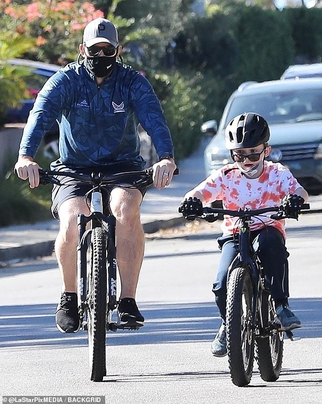
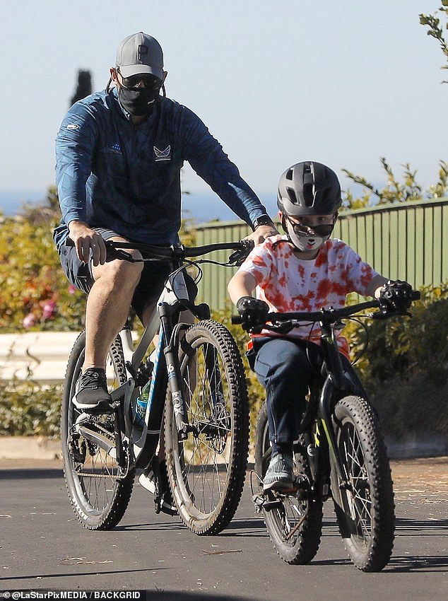
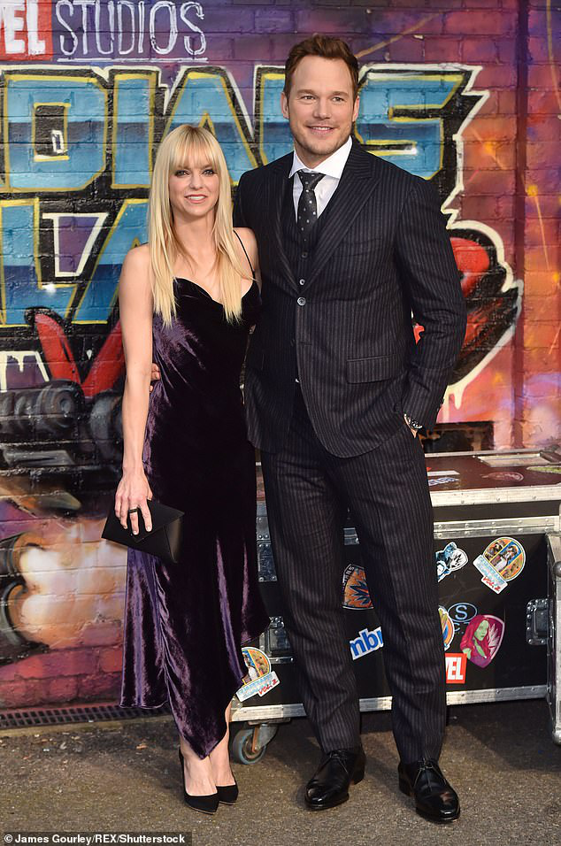
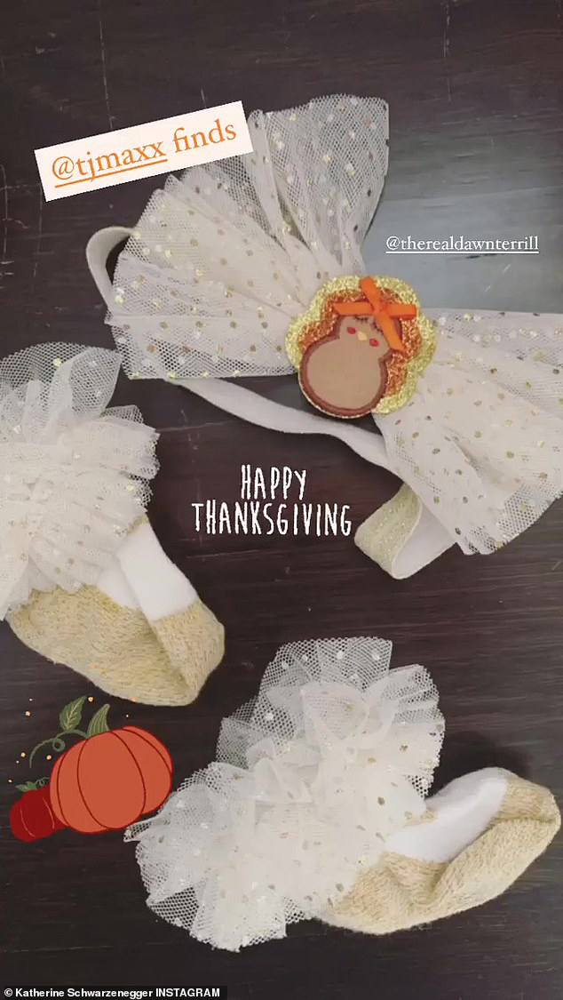

Chris Pratt proves to be the ultimate dad as he embarks on a bike ride with son Jack, eight, in Santa Monica He joyously welcomed his first child with wife Katherine Schwarzenegger, daughter Lyla Maria, in August.
But Chris Pratt was spotted bonding with his eldest child, eight-year-old son Jack, while out on a bike ride in Santa Monica on Sunday afternoon.
The Jurassic World actor, 41, suited up for the outdoor activity in a sweat-proof long sleeve top that featured a blue geometric pattern.

Bonding: Chris Pratt was spotted bonding with his eldest child, eight-year-old son Jack, while out on a bike ride in Santa Monica on Sunday afternoon
Pratt paired his sports top with a pair of black basketball shorts that coordinate with the mask over his mouth and nose.
He peddled away on his bicycle in a pair of black Adidas sneakers with white soles.
The Parks And Recreation alum biked beside him boy as they made their way up and down their desolate neighborhood.

Got the gear: The Jurassic World actor, 41, suited up for the outdoor activity in a sweat-proof long sleeve top that featured a blue geometric pattern
Jack looked super cute in a tie-dyed tee and a pair of sweatpants that matched his matte black helmet.
Chris shares the darling eight-year-old with ex wife Anna Faris, 44, whom he divorced from in 2018 after nine-years of marriage.
Since their split, Pratt has found love with Arnold Schwarzenegger and Maria Shriver's eldest daughter Katherine, 29.
After less than a year of dating, Katherine and Chris announced via Instagram in January of 2019 that they were engaged to be married.
'Sweet Katherine, so happy you said yes! I'm thrilled to be marrying you. Proud to live boldly in faith with you. Here we go!' wrote the actor, who shared a photo of himself kissing Katherine as she flashed her ring for the camera.

Co-parenting: Chris shares the darling eight-year-old with ex wife Anna Faris, 44, whom he divorced from in 2018 after nine-years of marriage; Anna and Chris pictured in 2017
On her podcast, shortly after news broke, Farris referred to her former husband as 'sweet Chris' and admitted that she 'knew' the engagement was going to happen.
'I love her, and I love him, and I'm just so happy that they found each other,' gushed the Mom star.
Chris and Katherine tied the knot in June of 2019 during a private ceremony in Montecito, California, according to People.
'You can tell today is the happiest day for Katherine. She hasn't stopped smiling. And Chris seems giddy with excitement. The venue is beautiful. Lots of flowers and greenery everywhere. It's a very romantic setting for a wedding,' dished a source to the outlet at the time.

Parenthood: Katherine shared some of her daughter's Thanksgiving accessories with her Instagram following
'Doing great, just got her a little gift,' said the aspiring actor at the time to inquisitive cameramen, as he grabbed a gift for his new niece at a Los Angeles gift shop.
Eventually, via Instagram, Chris and Katherine confirmed their baby girl's birth as they shared a photo of themselves holding her tiny hand.
'We are beyond thrilled to announce the birth of our daughter Lyla Maria Schwarzenegger Pratt,' the post began.
'We couldn’t be happier and we feel extremely blessed! Love, Katherine and Chris'